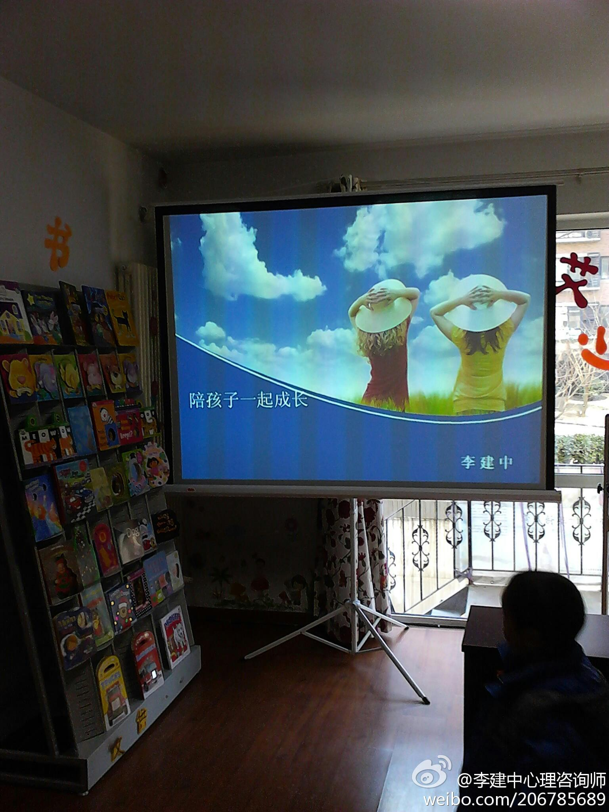
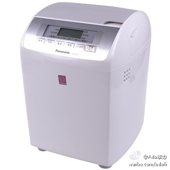
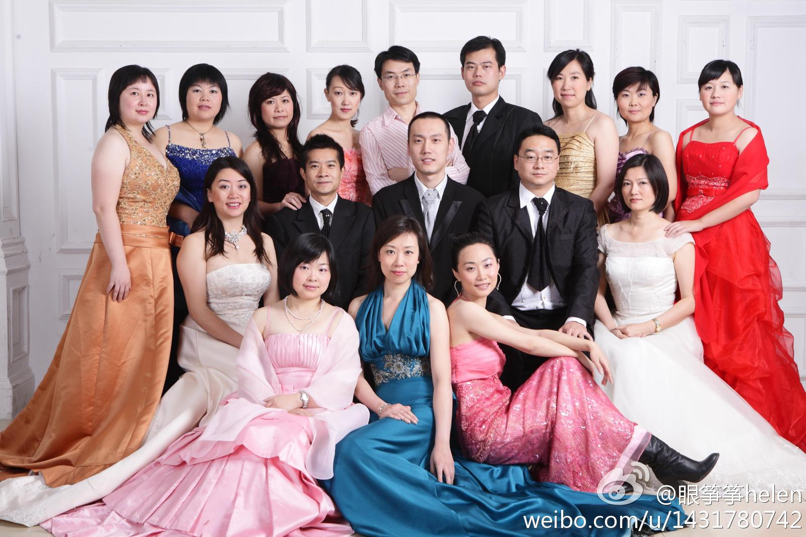
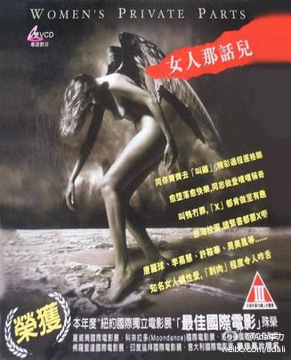

今天在艾利森英文图书馆听了 @李建中心理咨询师 的讲座<陪孩子一起成长>, 收获很大. 之前与贺薇聊过, 孩子的问题, 往往是父母问题的延伸. 很多父母只看到孩子的问题, 而看不到自己的问题. 而成人后的继续成长, 才是个大问题.@李建中心理咨询师:准备开始了 
年后买了一个小家电, 解决早餐问题. 料理也可以成为生活乐趣之一. // 我在@京东商城 发现了一个非常不错的商品：松下（Panasonic）SD-P205 面包机超强面包机，自动填充辅料，微电脑控制烘烤！，京东价：￥1699.00。感觉不错，分享一下 网页链接 
之前曾经参与某央企承担的政府部门项目, 虽然只有几个月的时间, 留给我的印象是, 如果在那种环境里, 自己会死得很惨. 当时有个人推荐了一本书, 阎真的<沧浪之水>, 最近才有时间看, 很不错, 但看完的感觉是悲凉. 主人公要消灭原有的自己, 才能达到他的职业顶点. 腾讯网上有连载. 网页链接
在淘花网(网页链接上下单买了本书和两段视频, 每单交易不超过几元钱, 这种变相的电子书, 视频appstore, 生命力会如何呢? 看了下品种, 类似在超市中售卖的那种生活类书, 读者群以女白领和家庭主妇为主, 也是淘宝网的主流用户. 淘花的客户端会是个大问题, 离线观看对生活类视频很重要.
回到十年前工作过的公司里做交流, 见到那么熟悉面孔, 才觉得十年也很短呀.@眼筝筝helen:@Ada李力 是特别好的一个例子，职业的机遇和个人努力，加上广泛的公众演说，整个人脱胎换骨，光芒四射，从普通工程师变成具有了热烈而又有感染力的女王气场的明星和技术传道
漂亮的同事们, 你们似乎都装进了保鲜盒, 十年岁月似乎没有在你们脸上身上留下印迹. @麦琪的-礼物 @眼筝筝helen @EchoQQQ 怎么没有看到@晓丽Sherlly ?@眼筝筝helen:那一年我们一起穿的礼服。。。 
这是个纪录片, 印象深的是大家都共同回答的一个问题: 如果你是男性, 你会娶自己吗? 回答者从四岁的小女孩, 到六十多的婆婆, 都回答'是" 。香港女性都好自信哈。电影《女人那话儿》 (来自豆瓣) 女人那话儿 (豆瓣) 
有些电影不能看, 比如《时时刻刻》。很难理解布朗夫人要自杀，最后抛家弃子出走。想起很早看过的莱辛的小说《17号房间》，读时也是不理解。但是这些人物就是会让你印象深刻，而且似曾相识。电影《时时刻刻 The Hours》 (来自豆瓣) 时时刻刻 (豆瓣)
当年《泰坦尼克》的两位主演，诠释了结婚后中产阶级的生活。女主人公在大多数人眼里都属于不正常类型，却是一位精神病人眼中，最有生活热情的一位。很有讽刺意味。 电影《革命之路 Revolutionary Road》 (来自豆瓣) 革命之路 Revolutionary Road (2008)
在豆瓣上给打了满分，和平均分6.6相去甚远。因为看这部影片中毒了，看了很多遍，还写帖子分析人物角色，多年看影片都没有这么热情过，向几个朋友郑重推荐过。可能这部影片最有意思的是，看那些观点迥异的影评，大致可以看出写影评人的潜意识。 电影《霜花店 쌍화점》 (来自豆瓣) 豆瓣错误